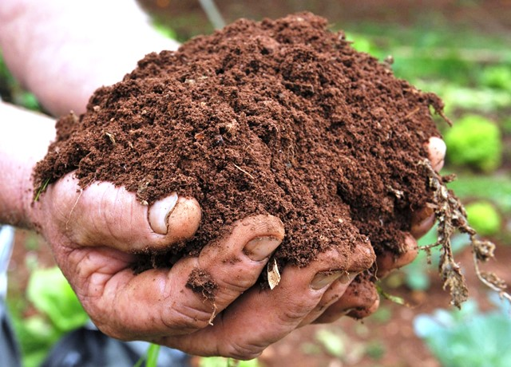

Introdução
Resumo
Manejo dos...
Aspectos físicos
Tem como objetivo
- Preparo primário e secundário do solo
- Plantio
- Cultivo (Controle de plantas invasoras)
- Escarificação
- Subsolagem
Aspectos químicos
Objetivos...
- Corrigir a acidez do solo (pH)
- Disponibilizar macro e micronutrientes
- Aumentar a CTC
- Eliminar a toxidez
Práticas para conservação do solo
- Rotação de culturas
- Adubação Verde
- Terraceamento
- Semeadura em nível